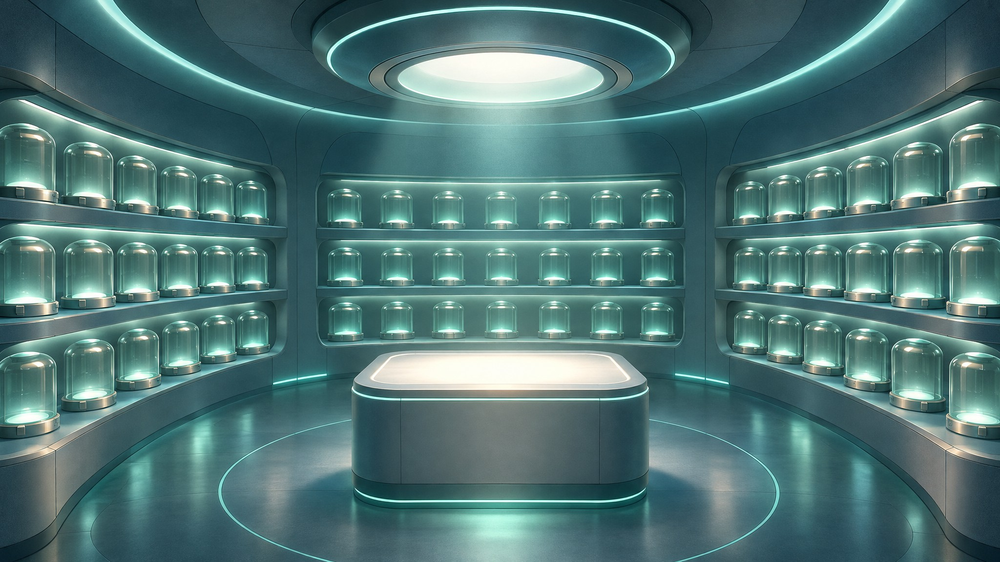

findings go to the operations team, who review every one
CODE
AWS CodeCommit
workflow code
CONTAINER IMAGES
Amazon ECR · private
each locked to its exact identity
ONE BUNDLE
Amazon S3
workflow · plugins · references · data — a fingerprint for every file
GitLab Runner · prepares the release
ONE COMPLETE, SELF-CONTAINED RELEASE
REGISTERED ready to run
Read back → Compare → Register
✓
Workflow
✓
Plugins
✓
References
✓
Test data
✓
Every container image
✕
Fingerprint does not match
The release stops here — long before it reaches a run.
GITLAB
Approved run request
starts a controlled run with its own unique identity
AWS CodePipelineten gated stages
1Source
2Verify source
3Check request
4Check release
5Check data
6Check images
7Runtime ready
8Run offline
9Validate results
10Publish report
checked before anything executes
validated and reported
internet
START
GitLab
approved run request
ORCHESTRATE
AWS CodePipeline
ten gated stages
STAGE WORK
AWS CodeBuild
does each stage's work
COMMANDS
AWS Systems Manager
sends commands to the host
RUNTIME
Private EC2 host
runs the workflow
private network no internet route
BUNDLE
Amazon S3
the prepared bundle
IMAGES
Amazon ECR
the exact images
reached only through private endpoints →

✓
Bundle checked again
✓
Exact images · isolated store
✓
Nextflow · offline mode
✕ Plugin downloads
✕ Task network
✕ Image pulls
Everything it needs is already there.
RUN EVIDENCE
✓
The run succeeded
✓
Offline controls were in place
✓
Expected outputs exist
PASS
or
FAIL
Evidence report ready for the team
Hosted & scanned GitLab
Prepared AWS
Verified every file, every image
Executed offline
Backed by evidence
Tested end to endRepeatable for every release
Prepare once. Verify everything. Run with confidence.
Nextflow Offline · example: nf-core/sarek germline variant calling on a small public test dataset Narration: AI-generated voice (OpenAI gpt-realtime-2.1, marin) · Artwork: OpenAI gpt-image-2.6-sunburst · Labels and diagrams: code
AI VOICE · AI ART · CODE LABELS
ILLUSTRATION
GITLAB
PREPARE
VERIFY
RUN OFFLINE
EVIDENCE
01 · ONE REAL WORKFLOW
02 · ONE TRUSTED HOME
03 · PREPARE THE RELEASE
04 · VERIFY BEFORE TRUST
05 · A CONTROLLED RUN
06 · RUN OFFLINE
07 · PROOF, NOT PROMISES
08 · RUN WITH CONFIDENCE
A scientific workflow depends on much more than its own code.
It needs container images, plugins, reference files and input data — all of
them, at the moment it runs.
In a controlled environment with no internet, one missing piece stops the analysis.
Nextflow Offline removes that risk: everything is prepared first,
then run with confidence.
We'll follow one real workflow: a germline variant-calling test from nf-core Sarek,
using a small public test dataset. One release, from preparation to proven result.
Everything starts in GitLab, the single trusted home for the solution.
The workflow code lives in a GitLab repository.
Its container images live in the GitLab container registry.
The reference data and test datasets are hosted there too.
Content is scanned for security as it arrives,
and the operations team reviews every finding.
From GitLab, a GitLab Runner prepares the release.
The workflow code goes to AWS CodeCommit.
Each container image goes to private Amazon ECR, locked to its exact identity.
The workflow, plugins, references and data are packed into one bundle in Amazon S3,
with a fingerprint for every file.
Together, they form one complete, self-contained release.
Nothing is trusted just because it was uploaded.
Every file and every image is read back and compared against its fingerprint.
Only when everything matches is the release registered and ready to run.
If anything is missing or different, the release stops here,
long before it reaches a run.
An approved run request in GitLab starts a controlled run with
its own unique identity.
AWS CodePipeline leads the run through ten gated stages.
It checks the source, the release, the data,
the images and the runtime before anything executes,
then validates the results and publishes the report.
CodeBuild does the work of each stage,
and AWS Systems Manager sends commands to a private EC2 host with no internet route.
Private endpoints connect it only to the AWS services it needs.
On the host, the bundle is checked again against its fingerprints.
The exact images are loaded into an isolated container store.
Nextflow then runs in offline mode, using only what was prepared.
Plugin downloads are switched off, task containers have no network,
and no image can be pulled.
Everything the analysis needs is already there.
When the run ends, the result is checked, not assumed.
The pipeline confirms the run succeeded, that the offline controls were in place,
and that the expected outputs exist.
The answer is a clear PASS or FAIL, with an evidence report the team can review.
So the journey is complete: hosted and scanned in GitLab,
prepared and verified in AWS, executed offline and backed by evidence.
Tested end to end, and repeatable for every release.
Prepare once. Verify everything. Run with confidence.